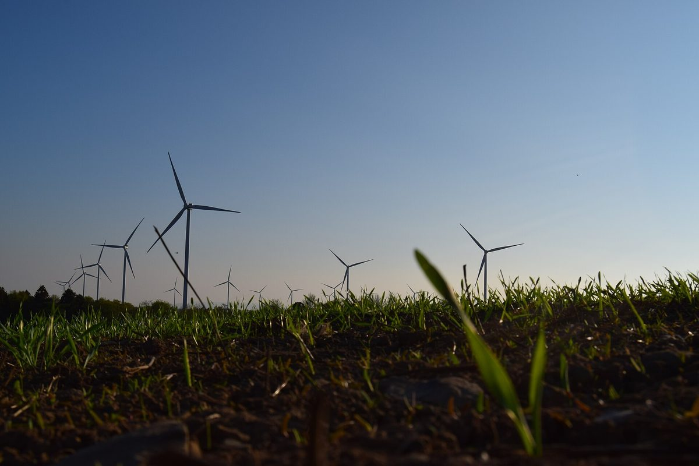

아일랜드 농촌부 장관, 재생에너지 지역이익기금 더 키워야…지금은 발전량 MWh당 2유로를 15년간 의무 출연

정부 새 농촌 발전 전략 발표 자리서 캘러리 장관이 운영사 출연금 인상 바란다고 밝혀, 인상 폭·시기는 안 내놔…마틴 총리는 5년간 전력망 180억 유로 투자로 농촌에 어려운 결정 온다고 말해
아일랜드 다라 캘러리(Dara Calleary) 농촌·지역개발부 장관이 10월 27일 정부의 새 농촌 발전 전략 발표 자리에서 재생에너지 사업이 지역사회에 돈을 더 돌려줘야 한다며 운영사가 내는 의무 출연금이 오르기를 바란다고 밝혔다. 지금 정부 재생전력 지원제도(RESS)를 받는 사업은 발전량 1MWh당 2유로를 15년 동안 지역이익기금(Community Benefit Fund)에 내야 하며, 이 돈은 지역 사업과 발전단지 가까운 가구 지원에 쓰인다. 지속가능에너지청(SEAI) 자료로는 마요주 오웨니니(Oweninny) 육상풍력 기금이 50만~100만 유로이고, 기사에 소개된 오펄리주 클론크린(Cloncreen) 풍력이 30만~40만 유로, 같은 주 옐로리버(Yellow River) 풍력이 최대 100만 유로 규모다. 캘러리 장관은 정부가 육상풍력 계획 규정을 마련하고 있으며 주민 의견은 계획 제도 안에서 반영될 것이라고 설명하면서, 기금에 대해서는 "그 기금이 더 커졌으면 한다"고 말했다. 같은 자리에서 미할 마틴(Micheál Martin) 총리는 앞으로 5년 동안 전력망에 180억 유로를 투자할 계획이라며 풍력 등이 늘어나면서 전국의 지역사회가 어려운 결정과 선택을 마주하게 될 것이라고 말했다. 장관은 출연금을 얼마나, 언제 올릴지는 밝히지 않았다.
시민에너지 관점
발전량 MWh당 2유로를 15년 동안 걷는 아일랜드의 지역이익기금은 개발이익 일부를 지역에 돌린다는 원칙을 제도로 세운 것이지만, 담당 장관 스스로 더 커져야 한다고 말할 만큼 주민 몫은 여전히 작다. 출연금을 올리면 사업성이 떨어진다는 업계 반론이 나올 수 있지만, 주민이 받아들이지 않아 사업이 늦어지고 멈추는 비용이 더 클 수 있다. 네덜란드 노르트브라반트주가 50MW 이상 태양광·15MW 이상 풍력 개발사에 지역 소유 50%를 추진하고 그 노력을 입증하도록 한 것처럼, 주민을 기금의 수혜자에 머물게 하지 않고 공동 소유자로 세울 때 개발이익이 지역의 자산으로 쌓인다. 재생에너지 개발이익 공유 제도를 설계할 때 출연금은 최소한의 바닥으로 삼고, 주민과 지자체의 지분 참여를 기본으로 삼아야 한다.
출처: Irish Independent 2026-10-27 Aisling Moloney 원문 보기
アイルランド農村相、再生可能エネルギーの地域利益基金を大きくすべきと発言…現在は発電量1MWhあたり2ユーロを15年間義務拠出
政府の新たな農村振興戦略の発表の場でキャラリー大臣が事業者の拠出金引き上げを望むと表明、引き上げ幅や時期は示さず…マーティン首相は5年間で送電網に180億ユーロを投じ農村に難しい決断が迫られると発言
アイルランドのダラ・キャラリー（Dara Calleary）農村・地域開発相は10月27日、政府の新たな農村振興戦略の発表の場で、再生可能エネルギー事業は地域社会にもっと資金を還元すべきだとして、事業者が出す義務的な拠出金が引き上げられることを望むと述べた。現在、政府の再生可能電力支援制度（RESS）を受ける事業は、発電量1MWhあたり2ユーロを15年間、地域利益基金（Community Benefit Fund）に拠出しなければならず、この資金は地域の事業や発電所近くの世帯への支援に使われる。持続可能エネルギー庁（SEAI）の資料によると、メイヨー州オウェニニー（Oweninny）陸上風力の基金は50万〜100万ユーロで、このほかオファリー州クロンクリーン（Cloncreen）風力は30万〜40万ユーロ、同じ州のイエローリバー（Yellow River）風力は最大100万ユーロの規模だ。キャラリー氏は、政府が陸上風力の計画指針を策定中で、住民の意見は計画制度の中で反映されると説明したうえで、基金について「もっと大きくなってほしい」と語った。同じ場でミホール・マーティン（Micheál Martin）首相は、今後5年間で送電網に180億ユーロを投資する計画だとし、風力などが増えるにつれて全国の地域社会が難しい決断と選択に直面することになると述べた。大臣は拠出金をどれだけ、いつ引き上げるかは明らかにしなかった。
市民エネルギーの視点
発電量1MWhあたり2ユーロを15年間集めるアイルランドの地域利益基金は、開発利益の一部を地域に還元するという原則を制度にしたものだが、担当大臣自らがもっと大きくすべきだと言うほど、住民の取り分はなお小さい。拠出金を上げれば採算が悪化するという業界の反論も出るだろうが、住民の理解が得られず事業が遅れたり止まったりするコストのほうが大きくなりうる。オランダ北ブラバント州が50MW以上の太陽光と15MW以上の風力の開発事業者に地域所有50%を目指し、その努力を証明するよう求めたように、住民を基金の受益者にとどめず共同所有者に据えてこそ、開発利益が地域の資産として積み上がる。再生可能エネルギーの開発利益共有の制度を設計する際は、拠出金を最低限の底とし、住民と自治体の出資参加を基本に据えるべきだ。
出典: Irish Independent 2026-10-27 Aisling Moloney 原文を読む
爱尔兰农村部长称应扩大可再生能源社区收益基金…目前按每兆瓦时发电量2欧元强制缴纳15年
在政府新农村发展战略发布会上，Calleary部长表示希望提高运营商缴款，但未提出提高幅度和时间…总理Martin称未来5年将向电网投资180亿欧元，农村将面临艰难抉择
爱尔兰农村和社区发展部长Dara Calleary于10月27日在政府新农村发展战略发布会上表示，可再生能源项目应向地方社区回馈更多资金，他希望提高运营商须缴纳的强制性款项。目前，获得政府可再生电力支持计划（RESS）补贴的项目，须按每兆瓦时发电量2欧元的标准，连续15年向社区收益基金（Community Benefit Fund）缴款，这笔钱用于地方项目和资助电站附近的住户。根据爱尔兰可持续能源局（SEAI）的资料，梅奥郡Oweninny陆上风电项目的基金规模为50万至100万欧元；此外，奥法利郡Cloncreen风电为30万至40万欧元，同郡Yellow River风电最高达100万欧元。Calleary说明，政府正在制定陆上风电规划规则，居民意见将在规划制度内得到反映；谈到基金时他说：“我希望这些基金能更大一些。”总理Micheál Martin在同一场合表示，未来5年计划向电网投资180亿欧元，随着风电等项目增加，全国各地社区将面临艰难的决定和选择。部长没有说明缴款将提高多少、何时提高。
市民能源视角
爱尔兰按每兆瓦时2欧元、连续15年征收的社区收益基金，把开发收益部分回馈地方的原则变成了制度，但连主管部长本人都说应该更大，可见居民所得仍然很少。业界可能会反驳说提高缴款会削弱项目收益，但如果居民不接受、项目因此拖延乃至停摆，代价可能更大。荷兰北布拉班特省要求50MW以上光伏和15MW以上风电的开发商争取50%的本地所有权并证明所作的努力；同样，只有让居民不再只是基金的受益人，而是成为共同所有者，开发收益才能积累为地方的资产。设计可再生能源开发收益共享制度时，应把缴款作为最低底线，并以居民和地方政府入股参与为基本原则。
来源: Irish Independent 2026-10-27 Aisling Moloney 查看原文
Ireland's rural affairs minister wants bigger renewable energy community benefit funds, now set at 2 euros per MWh for 15 years
At the launch of the government's new rural development strategy, Minister Calleary said he would like operators to pay more but gave no figure or timing; Taoiseach Martin said 18 billion euros of grid investment over five years will bring difficult choices for rural communities
Ireland's Minister for Rural and Community Development, Dara Calleary, said on October 27, at the launch of the government's new rural development strategy, that renewable energy projects should give more money back to local communities and that he would like to see the mandatory contributions paid by operators increased. At present, projects supported under the government's Renewable Electricity Support Scheme (RESS) must pay 2 euros for every MWh they generate into a Community Benefit Fund for 15 years, money that goes to local projects and to households living near the sites. According to figures from the Sustainable Energy Authority of Ireland (SEAI), the fund for the Oweninny onshore wind farm in Co. Mayo is worth 500,000 to 1 million euros, while the Cloncreen wind farm in Co. Offaly 300,000 to 400,000 euros, and the Yellow River wind farm, also in Offaly, up to 1 million euros. Calleary said the government is drawing up planning rules for onshore wind and that community views will be taken into account within the planning system, adding of the funds: "I would like to see those funds being bigger." At the same event, Taoiseach Micheál Martin said 18 billion euros is to be invested in the grid over the next five years and that, as wind and other projects expand, communities around the country will face difficult decisions and choices. The minister did not say by how much or when the contributions might rise.
Citizen Energy View
Ireland's community benefit fund, collected at 2 euros per MWh for 15 years, turns the principle of returning part of development gains to local areas into a formal rule, yet the residents' share remains small enough that the responsible minister himself says it should be bigger. The industry may argue that higher contributions would hurt project returns, but the cost of projects being delayed or halted because communities will not accept them can be greater. Just as the Dutch province of North Brabant requires developers of solar parks of 50MW or more and wind farms of 15MW or more to pursue 50% local ownership and prove their efforts, development gains build up as local assets only when residents are made co-owners rather than kept as fund beneficiaries. When designing benefit-sharing rules for renewable energy, contributions should be treated as the floor, with equity stakes for residents and local authorities as the norm.
Source: Irish Independent 2026-10-27 Aisling Moloney Read the original